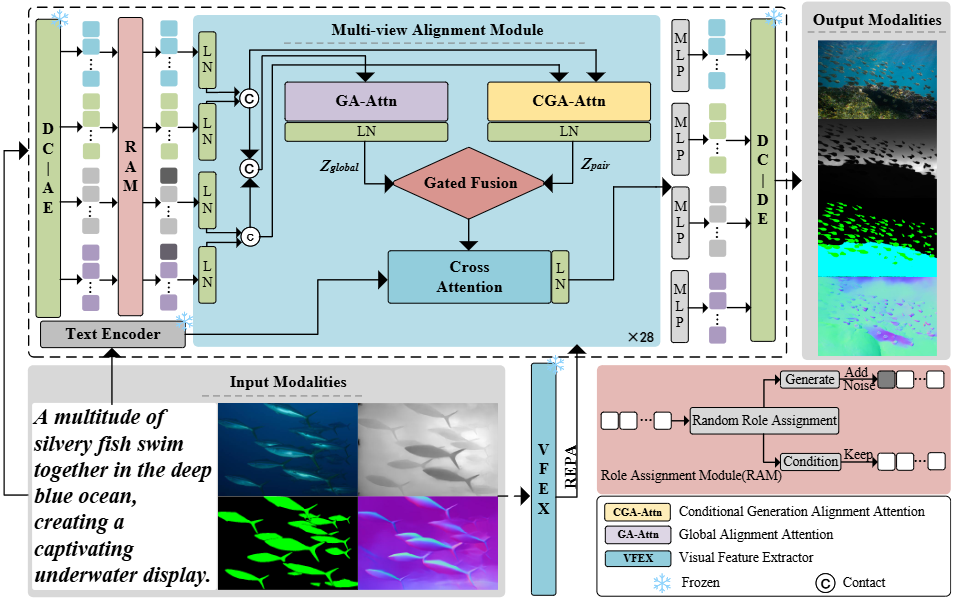
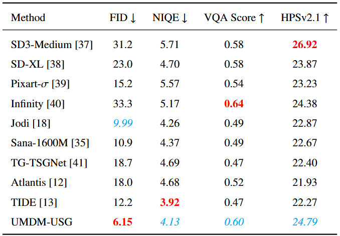
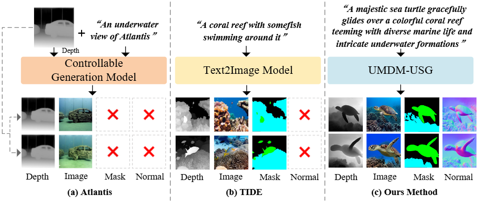
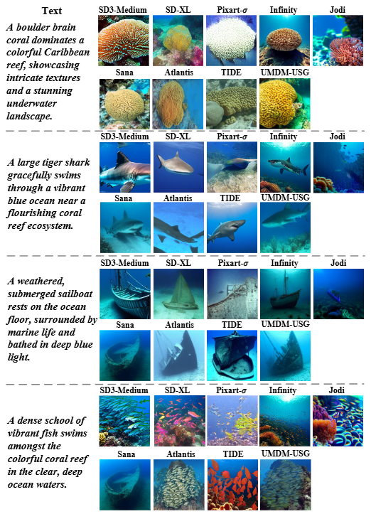

UMDM-USG: A Unified Multi-view Diffusion Model for Underwater Scene Generation via Cross-View Representation Alignment
|
 |
The architecture of the proposed UMDM-USG.
Abstract
Underwater scene understanding is crucial for marine exploration, ecological monitoring, and robotic operations, yet the scarcity of large-scale, high-quality underwater datasets severely limits the performance of learning-based models.In this paper, we propose UMDM-USG, a Unified Multi-view Diffusion Model for Underwater Scene Generation based on cross-view representation alignment. By treating each modality---image, segmentation mask, depth map, and surface normal---as a distinct view of the same underwater scene, UMDM-USG jointly generates coherent multi-view outputs conditioned on expressive textual descriptions. To strengthen cross-view coherence, we introduce a Conditional Generation Alignment Attention (CGA-Attn) mechanism that explicitly enhances semantic and geometric alignment across views. In addition, we construct the U-TMDN dataset, consisting of 53,403 underwater images with comprehensive multi-view annotations. Extensive experiments demonstrate that UMDM-USG achieves superior or competitive performance in image quality and semantic consistency, and that the generated multi-view data consistently improve multiple downstream underwater vision tasks.
Links

Experimental Results
|
 |
|
 |
llustration of different underwater scene generation method.
|
 |
| |
Qualitative comparison of different generative models in terms of a given textual description of underwater scene.
Citation
@ARTICLE{
author={Yifan Zhu, Chengjia Wang, Xinghui Dong},
journal={Pattern Recognition},
title={UMDM-USG: A Unified Multi-view Diffusion Model for Underwater Scene Generation via Cross-View Representation Alignment},
year={2026},
}